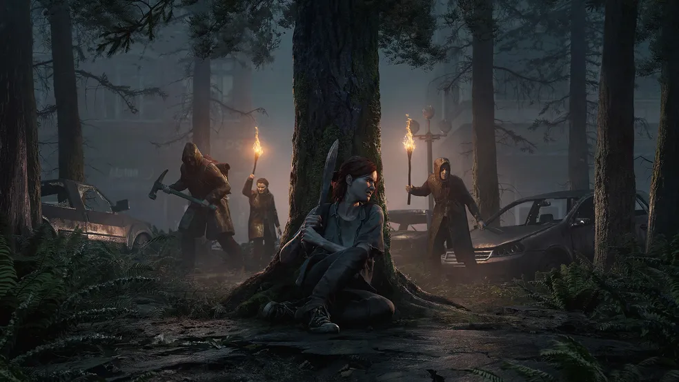
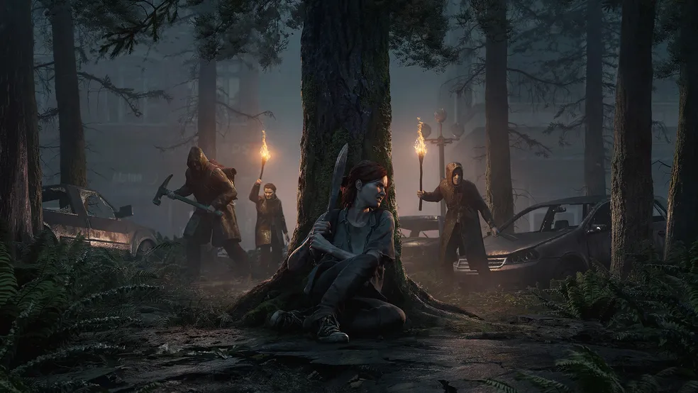
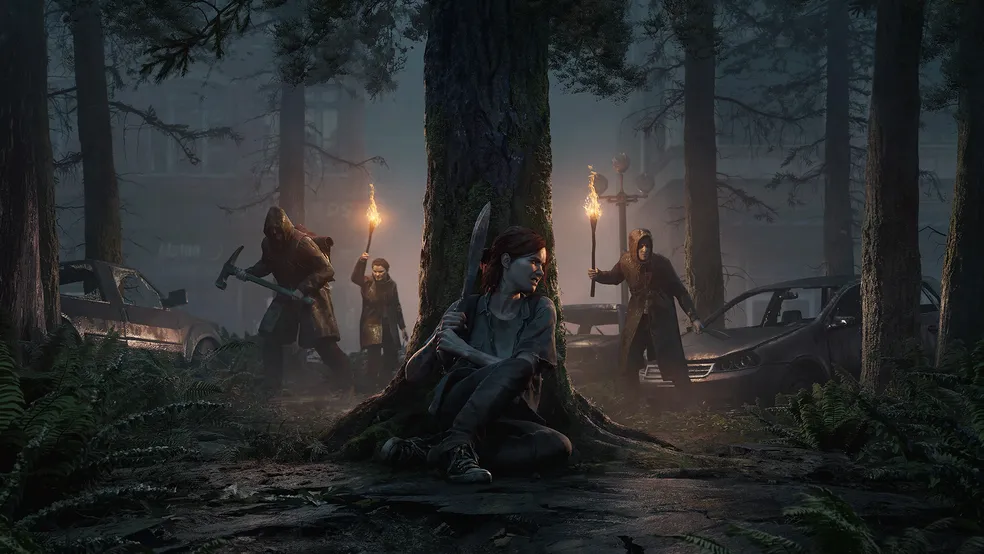
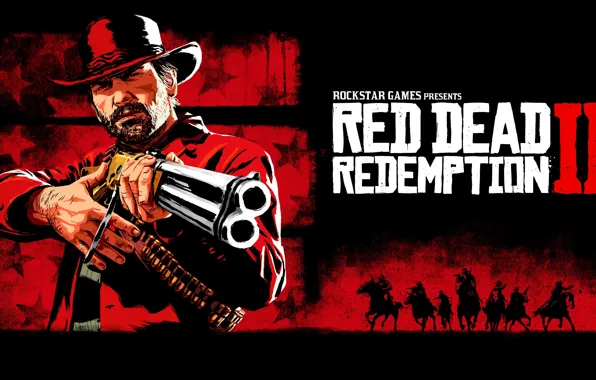
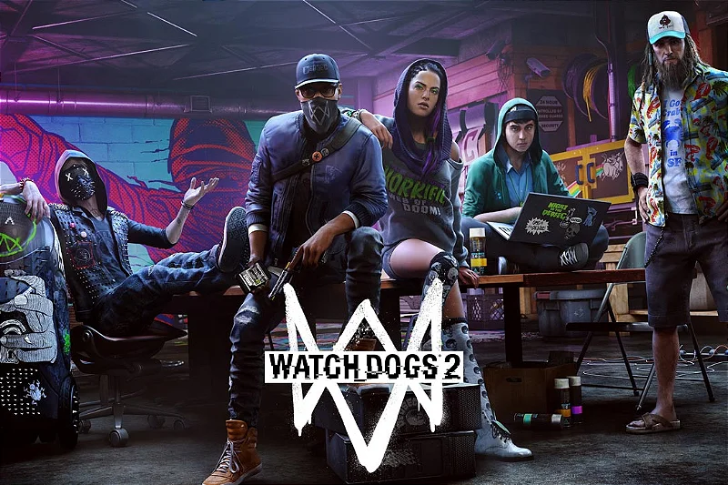
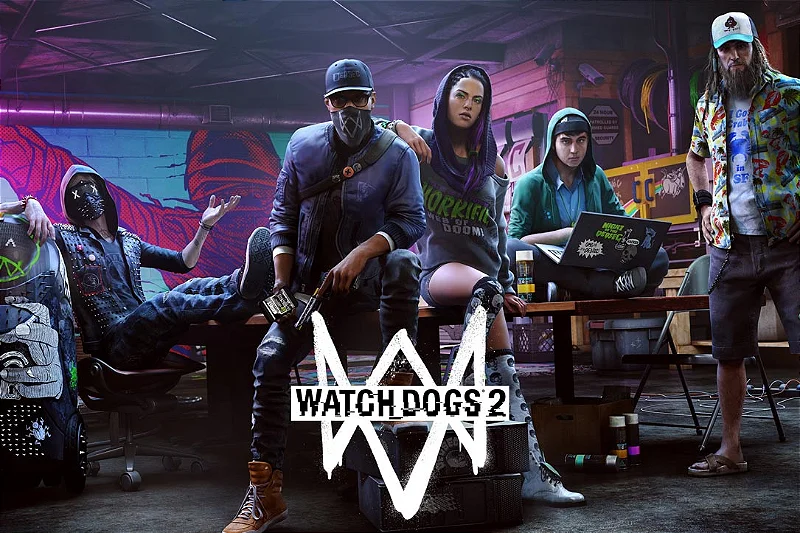

Esta é a lista de top 3 jogos que considero meus favorito:

Um dos melhores jogos criados pela Naughty Dog e lançado pela Playstaiaton. O jogo se passa em um mundo pós-apoliptico que foi tomado por um fungo que transformou parte das população em criaturas sem conciência e sem humanidade nenhuma, na segunda parte a historia continua contando a historia de Ellie buscando vingança pela morte de Joel, a pessoa que ela considera como figura paterna, e nessa continuação tem mais ação e emoção que o primeiro jogo, e um visual bem melhorado.
Para mais saber mais sobre acesse os links:


Red Dead Redeption 2 é considerado um dos melhores jogos que foram criados pela RockStar Games, o jogo na época que foi lançado foi a maior febre do momento, pois ele veio com a históri incrivie junto com o grafico absurdo e com a gameplay insana de bom, retratando um visual de faroeste com cowboys foras da leis, indios e muito mais, a paisagem do jogo é muito boa e a imersão é incrivel.
Para saber mais sobre acesse:
 

Watch Dogs 2 entra nessa lista pelo motivo de ser um jogo onde o protagonista é um hacker, que é recurtado por um grupo de hacktivista para poder derrubar uma corporação que com o desenvolvimento de tecnologia esta roubando dados das pessoas e construindo armas militares sem a sociedade saber, no jogo você como um hacker ira passar por varios puzzeles para invadir redes, lutar contra o sistema, e revlar a veradade para a sociedade, o jogo é ótimo com a jogabilidade de combate envolvendo maneiras de hackear as coisas ao seu redor para ajudar a completar missões.
Para saber mais sobre acesse: